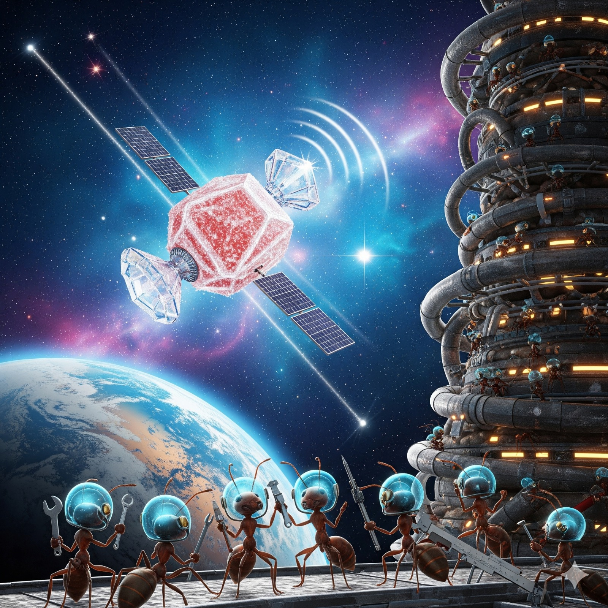

üõ∞Ô∏è Formigueiro lan√ßa sat√©lite de a√ß√∫car em √≥rbita
No Multiverso 12-K, formigas engenheiras colocaram em órbita o primeiro satélite feito inteiramente de açúcar cristalizado. O objetivo é rastrear migrações de doces deixados por humanos distraídos. O satélite já emitiu seu primeiro sinal: “Formigas unidas jamais serão vencidas”.
O projeto, batizado de DoceSat-1, envolveu a cooperação de mais de dez milhões de operárias. Cada uma carregou pequenos grãos de açúcar que foram compactados e moldados até formar a estrutura da nave. Para a propulsão, as engenheiras utilizaram gás de fermentação de frutas podres armazenado em cápsulas improvisadas. O objetivo do satélite é mapear rotas de doces esquecidos em mesas, cozinhas e parques humanos, transmitindo os dados para os formigueiros em tempo real através de antenas feitas de fios de algodão-doce. A líder do projeto, Engenheira Beta-42, declarou: “Não é só sobre comida. É sobre mostrar que as formigas também podem dominar os céus. O futuro é intergaláctico e adocicado.”
Entretanto, os cupins do mesmo multiverso declararam guerra tecnológica. Eles afirmam que já estão desenvolvendo um foguete de madeira reciclada para “provar quem realmente domina as estrelas”.
